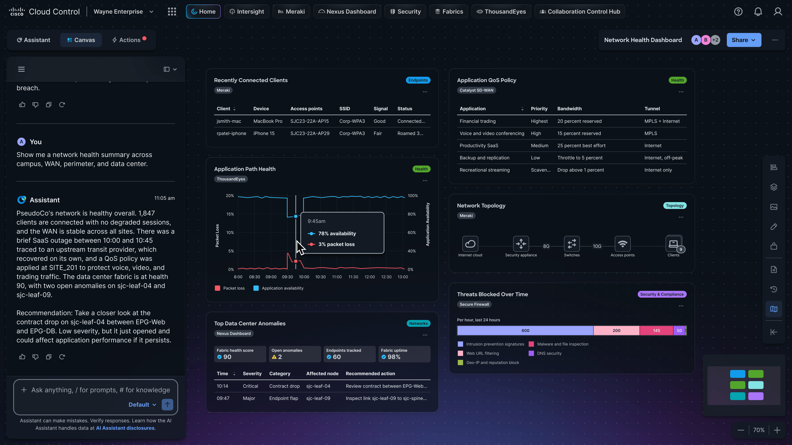

Cisco Live US 2026: Cloud Control and the New Operating Model for IT
Why Cloud Control is the center of the agentic operations story, with AI Canvas, Studio, Marketplace, Cisco IQ, PQC, and Live Protect in context.
Writing, demos, and public repos about AI, security, infrastructure, and the messy middle where executive questions meet real operational systems.
Long-form pieces built for IT leaders, architects, and operators who need the real point without losing the technical edge.

Why Cloud Control is the center of the agentic operations story, with AI Canvas, Studio, Marketplace, Cisco IQ, PQC, and Live Protect in context.
How the Model Context Protocol can turn technical systems into a more usable intelligence layer for operators and executives.
Agentic AI is moving from copilots to coworkers. The security model has to move with it: identity, least privilege, runtime inspection, and recovery.
The live repo shelf pulls from GitHub and falls back to a curated set if the API is unavailable.
This hub is meant to be a conversation surface, not a static archive.
Use the like controls to keep track of the pieces you want to revisit and the topics you want to see more often.
The comment area below is wired for GitHub Issues through Utterances, so readers can leave real comments after signing in with GitHub.
Repo cards link directly to GitHub so readers can inspect the work, star it, fork it, or raise an issue where the project lives.
Leave a comment on the site
Comments are tied to this page through GitHub, so the discussion stays connected to the public work.